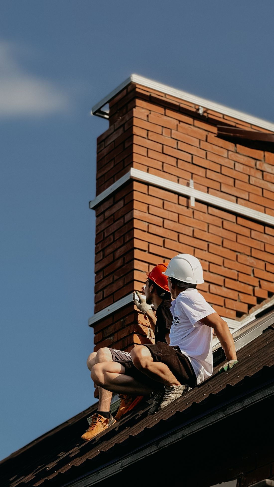
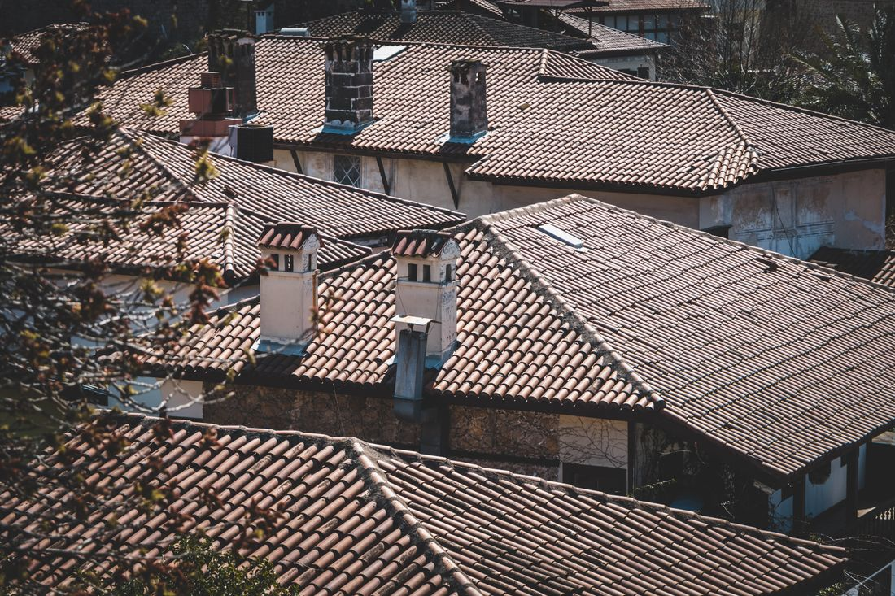
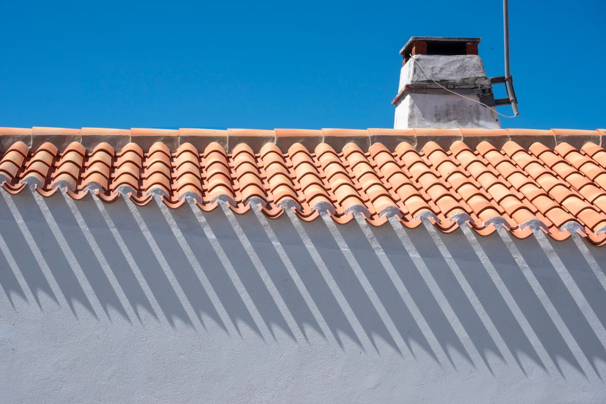
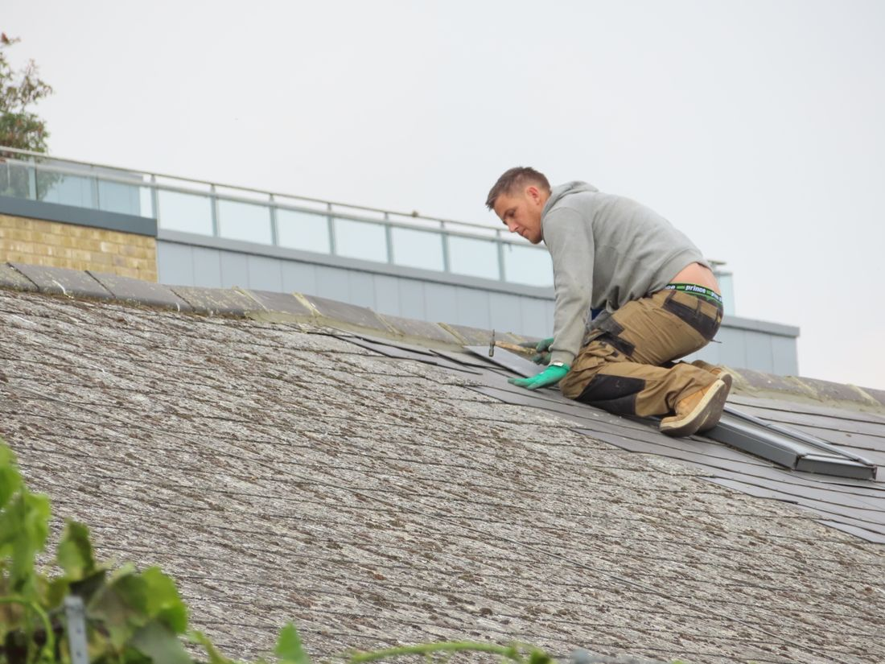
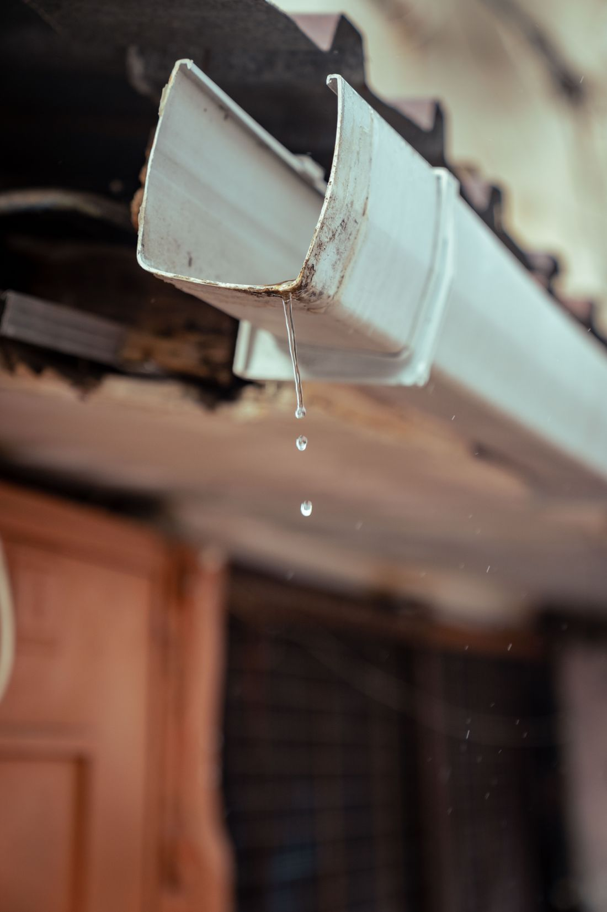
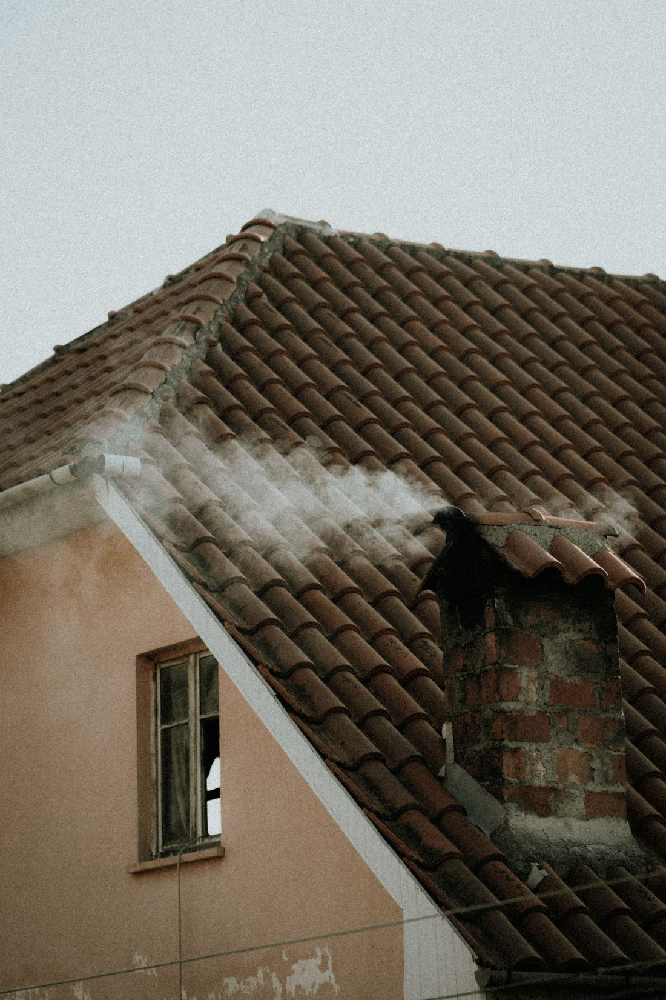
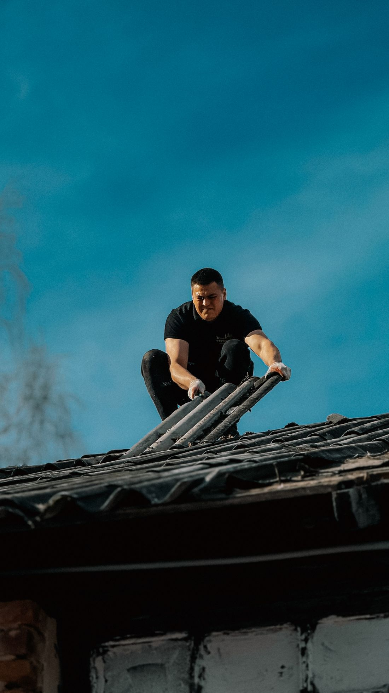

Home / Services
Everything that keeps water on the outside
Ridgeworks runs nine related trades with one crew and one supervisor, so a leak that turns out to be a gutter problem, or a repaint that uncovers rotten purlins, does not need a second contractor. Pick a trade to see how we do it.
Roof repairs & valley linings
A leak almost never starts where the damp patch shows. Water runs along a batten or a purlin and drops somewhere else entirely, which is why we trace it rather than guess it. The usual culprits on Cape roofs are corroded or badly lapped valley linings, flashing that has pulled away from a chimney or parapet, cracked and slipped tiles, perished sealant around pipes and aerial mounts, and ridging that has lifted in a southeaster.
Trained staff deal with different challenges every day when it comes to roof repairs. We identify the source, photograph it, and quote the repair rather than a full replacement wherever the structure allows it. Where the roof is genuinely at end of life we will say so, with pictures, instead of selling you repeated patching.
| Roof types | Concrete and clay tile, slate, IBR and corrugated sheeting, flat concrete decks |
|---|---|
| Common repairs | Valley linings, back and side flashings, ridging, cracked tiles, sheet fixings, sealing around penetrations |
| Leak tracing | Physical inspection of the roof surface and the void beneath it where accessible, plus roof survey on large or unsafe roofs |
| You receive | A written report with photographs of each defect before any price is agreed |
| Supervision | Owner supervised, safety officer on site where the job requires one |
| Also handled | The ceiling below, once the roof above it is closed |

Waterproofing
Waterproofing is a systems trade, not a product trade. The right answer depends on the substrate, the fall, the detail at the edges and how much foot traffic the surface takes. We install torch-on membrane on flat concrete decks and parapets, liquid rubber and acrylic systems where a seamless coating suits the shape better, and fibre-reinforced systems over junctions that move.
Most failures we are called to are not the membrane itself. They are terminations: an upstand that was never taken high enough, an outlet that was coated over, a parapet capping that funnels water behind the sheet. Those details are where the time goes on a Ridgeworks job, and they are what the photographs in your quote will show.
| Systems | Torch-on membrane, liquid 100% rubber, acrylic and fibre-reinforced coatings |
|---|---|
| Applies to | Flat and low-pitch concrete roofs, decks, balconies, parapets, gutters, box gutters, ridging |
| Products | Leading SABS-approved membrane and coating systems, chosen per substrate |
| Prep | High pressure clean, defective coating removed, cracks cut and filled, primer per system |
| Applicators | Trained waterproofing applicators, not general labour |
| Best season | Booked before the winter rains, so the surface is dry enough to bond |

High pressure cleaning
This is the process that removes algae, moss and dirt from roof areas, and it is the step most often skipped by cheaper quotes. Coating over a living layer of algae buys you two seasons before the new paint lifts in sheets. Cape Town's damp winters and southeaster dust make that layer build faster on the south-facing pitches than most owners expect.
We clean before we coat, every time, and we clean at a pressure matched to the surface. Old clay tiles and slate need a gentler approach than an industrial IBR sheet. On tanks, walls, paving and cladding the same equipment does the work without stripping the substrate underneath.
| Removes | Algae, moss, lichen, atmospheric dirt, chalking and loose old coating |
|---|---|
| Surfaces | Tile, slate, metal sheeting, fibre cement, plaster walls, paving, tanks and industrial cladding |
| Why first | Coatings bond to the substrate, not to the growth on it. Cleaning is what makes the paint last |
| Scale | Single houses through to factory roofs and civic buildings |
| Site care | Gutters cleared of the run-off, site washed down and left clean |
| Often paired with | Roof painting or a protective coating, quoted together |

Roof & exterior painting
We have trained staff that know how important quality work is to our clients, and on a paint job that shows up in the preparation rather than the final coat. Roofs get cleaned, rusted fixings get treated, bare metal gets primed and failed sealant gets cut out before a brush is opened. Walls get the same treatment: cracks opened and filled, chalked surfaces stabilised, and a system chosen for the exposure that wall actually faces.
We apply leading SABS-approved paint and coating systems, and we specify the system to the substrate rather than to the price list. General painting work, industrial cladding and full exterior repaints all run through the same crew and the same supervision as the roof trades.
| Scope | Roof coating, full exterior repaints, interior painting, industrial cladding |
|---|---|
| Systems | Leading SABS-approved paint and coating systems |
| Preparation | High pressure clean, rust treatment, priming, crack repair, sealant replacement |
| Metal roofs | Fixings checked and replaced where corroded before coating goes on |
| Occupied sites | Supervised throughout, especially in homes and offices |
| Finish | Site cleaned, offcuts removed, work walked with you before the team leaves |

Roof replacements
Our staff deal with different challenges every day when it comes to roofing, and a replacement is where those challenges surface. Once the covering comes off, the timber underneath tells the truth: purlins softened by years of a small leak, battens that have lost their fixings, or a structure that was under-specified when the house was built.
We strip, inspect and photograph the structure before the new covering goes on, and we come back to you with what we found rather than quietly covering it. Only quality materials are used when we replace, repair and maintain roof areas. Replacements run in sheeting, tile or slate, on houses, factory roofs and industrial buildings alike.
| Coverings | IBR and corrugated sheeting, concrete and clay tile, slate |
|---|---|
| Structure | Purlins, battens and timber inspected once stripped, repairs quoted with photographs |
| Included | Ridging, flashings, valley linings and fixings as part of the system |
| Access | Harnessed and anchored on every pitched job, with a safety file compiled per site |
| Buildings | Domestic, sectional title, commercial and industrial |
| Weather | Sequenced so open areas are closed the same day wherever possible |

Gutters & fascia
A blocked gutter is the cheapest roof problem to fix and one of the most expensive to ignore. Water backs up over the fascia, soaks the barge board and finds its way into the wall head, and by the time it shows inside the ceiling the timber has been wet for a season. On industrial roofs the same thing happens in box gutters, at a scale where the overflow lands on stock.
The same crew that gets onto your roof cleans and repairs the gutters while they are up there. We clear and repair domestic gutters, replace and waterproof industrial box gutters, and sort out the fascia and barge boards that usually need attention at the same time.
| Domestic | Gutter cleaning, repair and full replacement, plus downpipes |
|---|---|
| Industrial | Box gutter cleaning, replacement and waterproofing |
| Related work | Fascia boards, barge boards and the brackets behind them |
| Timing | Best done before the first winter rains, and again after leaf fall |
| Warning signs | Overflow marks on the wall, sagging runs, plants growing in the gutter, damp at the wall head |
| Often paired with | A roof inspection while the crew is already up there |

Inspections & condition reports
We get up onto the roof ourselves and photograph every section from ladders and walk boards, so you get a clear view of its condition rather than a guess from the driveway. Where a roof is genuinely too large or too unsafe to walk, we bring in an elevated platform instead of putting anybody on a fragile surface.
It suits homeowners who want to check for leaks, damage or wear without doing the climbing themselves, commercial and industrial owners who need a full overview of a large or complex roof, and estate agents and property managers who want an accurate condition report to hand a buyer or a tenant. You keep the report, which is useful for insurance as well.
| Access | Ladders and walk boards, plus elevated platform hire for large or unsafe roofs |
|---|---|
| Safety | Harnessed and anchored throughout, walk boards to spread the load on fragile sheeting |
| Coverage | Every section walked and photographed, valleys and hips included |
| Deliverable | A written roof condition report with photographs you keep |
| Suited to | Homeowners, commercial and industrial property, estate agents and property managers |
| Next step | If repairs are needed, a tailored quote comes with the report |

Chimneys, flashings & ridging
Roof coverings rarely fail in the middle. They fail at the joints, where one material has to meet another and something has to bridge the gap. Chimney aprons, wall abutments, valley linings, ridge and hip capping: that is where almost every leak we trace begins.
The cheap fix is a bead of sealant over the top, which lasts one summer and hides the problem while the timber underneath keeps getting wet. We take the joint apart, replace the flashing or the bedding properly, and re-point the capping so it is still sound in ten years.
| Scope | Chimney aprons and back gutters, wall abutment flashings, valley linings, ridge and hip capping |
|---|---|
| Method | Joint opened up and rebuilt, not sealed over |
| Bedding | Re-bedded and re-pointed in a flexible pointing compound rather than plain mortar |
| Materials | Galvanised, aluminium or lead-alternative flashing to suit the covering |
| Found along the way | Wet or rotten battens and purlins reported with photos before we replace anything |
| Typical job | One to two days on a domestic roof |

Tile & slate work
Concrete and clay tile move with age. Nibs wear, bedding cracks, and a tile that has sat sound for fifteen years can start to slip after one hard southeaster. Natural slate fails differently: the nail or peg holding it corrodes long before the stone does, so a slate that still looks perfect can already be loose underfoot.
We re-bed and re-point wherever the mortar has gone, and replace cracked or slipped tiles with a matching profile and colour rather than whatever happens to be on the truck. Slate repairs are sourced and matched so a patch does not stand out from the rest of the roof, and older porous tile that has started drinking in water gets cleaned and sealed, which is usually the cheaper answer next to a full recover.
| Covers | Concrete tile, clay tile, natural slate, fibre cement slate |
|---|---|
| Common repairs | Cracked and slipped tiles, failed bedding and pointing, corroded slate fixings |
| Matching | Replacement tile and slate matched to profile and colour, not just whatever is in stock |
| Sealing | Older porous tile cleaned and sealed to stop it absorbing water |
| Access | Walked and inspected tile by tile, harnessed on steep pitches |
| Often paired with | High pressure cleaning, since a seal only bonds to a clean surface |

One crew, so nothing falls between trades
The reason we run nine trades instead of one is simple. A leak is rarely just a leak. It is a gutter, then a flashing, then a ceiling. Splitting that across three contractors is how jobs stall and how blame starts.
- One quote covering the roof, the water and the damage inside
- One supervisor answerable for all of it
- No contract too big or too small, from one valley to a factory roof
- Free site visit and a photographed report before you commit

- Working since
- 2007
- Trades under one crew
- Nine
- Buildings
- Domestic & industrial
- Site quote
- Free